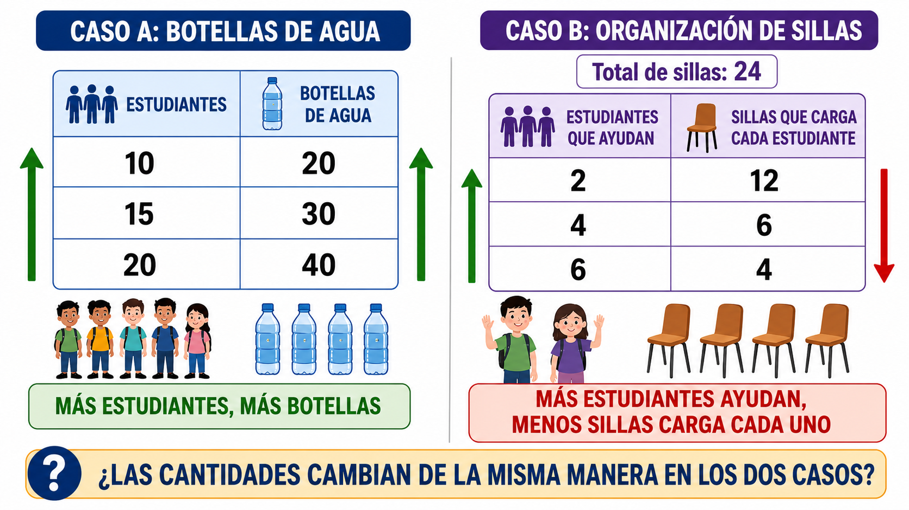

7°
SITUACIÓN PROBLEMA CENTRAL
¿Cómo comparar cantidades cuando no basta mirar cuál número es mayor?
En el Colegio Integrado Simón Bolívar se quiere organizar una jornada de hidratación para varios grupos de grado séptimo. Cada grupo tendrá una cantidad diferente de estudiantes y necesitará botellas de agua para la actividad.
El docente observa estos datos iniciales:
| Grupo | Número de estudiantes | Botellas de agua necesarias |
|---|---|---|
| Grupo A | 10 | 20 |
| Grupo B | 15 | 30 |
| Grupo C | 20 | 40 |
A primera vista, el Grupo C necesita más botellas que los demás. Sin embargo, también tiene más estudiantes. Por eso surge una pregunta importante:
¿Cómo podemos saber si la cantidad de botellas aumenta de manera justa y organizada según el número de estudiantes?
Durante esta guía vas a comparar cantidades, completar tablas, observar cambios y analizar cuándo dos cantidades crecen juntas o cambian en sentidos contrarios.
Glosario breve:
- Razón: comparación entre dos cantidades. En esta guía no se refiere a “tener la razón”, sino a comparar números.
- Cantidad: número que representa personas, objetos, medidas o valores.
- Tabla: organización de datos en filas y columnas para comparar mejor la información.

EXPLORACIÓN
¿Para qué es este momento?
En este primer momento vas a observar cómo cambian dos cantidades relacionadas. No necesitas aplicar reglas formales. Lo importante es mirar los datos, comparar y escribir tus ideas en el cuaderno.
Situación 1. Botellas de agua para varios grupos
Observa nuevamente la información de la jornada de hidratación:
| Grupo | Estudiantes | Botellas |
|---|---|---|
| A | 10 | 20 |
| B | 15 | 30 |
| C | 20 | 40 |
Responde en tu cuaderno:
- ¿Qué cantidad cambia en la segunda columna?
- ¿Qué cantidad cambia en la tercera columna?
- Cuando aumenta el número de estudiantes, ¿qué ocurre con el número de botellas?
- Completa la frase: “En esta situación, si hay más estudiantes, parece que se necesitan __________ botellas”.
Situación 2. Comparación entre estudiantes y botellas
Ahora observa cada grupo y piensa cuántas botellas corresponden aproximadamente a cada estudiante.
| Grupo | Estudiantes | Botellas | Idea inicial |
|---|---|---|---|
| A | 10 | 20 | ¿Alcanza la misma cantidad para todos? |
| B | 15 | 30 | ¿Se mantiene una comparación parecida? |
| C | 20 | 40 | ¿Cambia la relación entre estudiantes y botellas? |
Responde en tu cuaderno:
- ¿Qué grupo tiene más botellas en total?
- ¿Ese grupo también tiene más estudiantes?
- Si comparas estudiantes y botellas, ¿los tres grupos parecen recibir una cantidad parecida o diferente?
- Escribe una frase usando estas palabras: “estudiantes”, “botellas” y “comparar”.
Situación 3. Un caso diferente
En otra actividad, varios estudiantes deben organizar sillas en el aula. Si trabajan más estudiantes, cada uno debe cargar menos sillas.
| Estudiantes que ayudan | Sillas que carga cada estudiante |
|---|---|
| 2 | 12 |
| 4 | 6 |
| 6 | 4 |
Responde en tu cuaderno:
- ¿Qué ocurre con las sillas que carga cada estudiante cuando aumenta el número de estudiantes que ayudan?
- ¿Esta situación se parece a la de las botellas de agua? Sí / No. Explica con una frase.
- Completa: “En esta situación, si ayudan más estudiantes, cada uno carga __________ sillas”.
Cierre de exploración
Responde en tu cuaderno:
- ¿En cuál situación las dos cantidades aumentan al mismo tiempo?
- ¿En cuál situación una cantidad aumenta y la otra disminuye?
- ¿Por qué crees que comparar cantidades puede ser más útil que mirar solo un número?
ANALIZA
¿Qué vas a hacer en este momento?
Ahora vas a analizar con más detalle cómo se relacionan dos cantidades. Todavía no vas a memorizar reglas. Vas a completar datos, comparar cambios y reconocer qué tipo de relación aparece en cada situación.
Análisis 1. Completar una tabla de botellas
En la jornada de hidratación se quiere mantener la misma forma de repartir botellas. Observa la tabla y completa los espacios en tu cuaderno.
| Estudiantes | Botellas | ¿Qué observas? |
|---|---|---|
| 5 | 10 | Caso inicial |
| 10 | 20 | Aumentan las dos cantidades |
| 15 | __________ | Completa según los casos anteriores |
| 20 | __________ | Completa según los casos anteriores |
Responde:
- ¿Qué dato aumenta de 5 en 5?
- ¿Qué dato aumenta de 10 en 10?
- ¿Qué parece mantenerse parecido al comparar estudiantes y botellas?
- Completa la frase: “Por cada 5 estudiantes, parecen necesitarse __________ botellas”.
Análisis 2. Comparar dos formas de cambio
Observa las dos tablas. En ambas aparecen dos cantidades relacionadas, pero no cambian de la misma manera.
| Caso A: Botellas de agua | Caso B: Organización de sillas |
|---|---|
| 5 estudiantes → 10 botellas 10 estudiantes → 20 botellas 15 estudiantes → 30 botellas |
2 estudiantes → 12 sillas cada uno 4 estudiantes → 6 sillas cada uno 6 estudiantes → 4 sillas cada uno |
Responde en tu cuaderno:
- En el Caso A, cuando aumentan los estudiantes, ¿qué pasa con las botellas?
- En el Caso B, cuando aumentan los estudiantes que ayudan, ¿qué pasa con las sillas que carga cada uno?
- ¿Cuál caso muestra cantidades que aumentan juntas?
- ¿Cuál caso muestra una cantidad que aumenta mientras la otra disminuye?
Análisis 3. Detectar un posible error
Un estudiante observa esta tabla:
| Estudiantes | Botellas |
|---|---|
| 10 | 20 |
| 20 | 25 |
Luego afirma: “La relación está bien, porque en ambos casos aumentan las cantidades”.
Responde:
- ¿Qué dato aumentó de 10 a 20?
- ¿Qué dato aumentó de 20 a 25?
- ¿El aumento parece mantener la misma comparación entre estudiantes y botellas? Sí / No.
- Completa la frase: “No basta con que las dos cantidades aumenten, también hay que revisar si __________”.
Cierre de análisis
Escribe un párrafo breve de 4 a 6 líneas respondiendo:
¿Qué se debe observar en una tabla para decidir si dos cantidades cambian de manera organizada?
Puedes apoyarte en estas ideas:
- Qué cantidad aumenta.
- Qué cantidad disminuye.
- Si las cantidades cambian juntas.
- Si una cantidad aumenta mientras la otra disminuye.
- Si la comparación entre las cantidades se mantiene o cambia.
CONOCE ALGO NUEVO
¿Qué vas a aprender en este momento?
En este bloque vas a aprender cómo comparar dos cantidades relacionadas mediante razones y cómo reconocer si una situación presenta proporcionalidad directa o proporcionalidad inversa.
Para comprender estas ideas, retomaremos dos situaciones trabajadas en la situación problema central:
- La cantidad de estudiantes y la cantidad de botellas de agua.
- La cantidad de estudiantes que ayudan y las sillas que debe cargar cada uno.
La idea principal es que no siempre basta mirar cuál número es mayor. A veces necesitamos comparar dos cantidades para saber cómo se relacionan.
Microtarea en el cuaderno: completa la frase:
“Comparar cantidades sirve para saber si una cantidad cambia cuando __________ cambia”.
1. ¿Qué es una razón?
Una razón es una comparación entre dos cantidades. Se usa cuando queremos saber cómo se relaciona una cantidad con otra.
Por ejemplo, si en un grupo hay 10 estudiantes y se necesitan 20 botellas de agua, podemos comparar:
- 20 botellas con 10 estudiantes.
- 10 estudiantes con 20 botellas.
En esta guía usaremos principalmente la comparación entre botellas y estudiantes.
Esta razón puede escribirse así:
20 : 10
También puede escribirse como una fracción:
20/10
Esto significa que se comparan 20 botellas con 10 estudiantes. Al simplificar o dividir, se obtiene:
20 ÷ 10 = 2
Esto quiere decir que corresponden 2 botellas por cada estudiante.
| Estudiantes | Botellas | Comparación | Interpretación |
|---|---|---|---|
| 10 | 20 | 20 ÷ 10 = 2 | 2 botellas por estudiante |
Microtarea en el cuaderno: copia y completa:
Si hay 15 estudiantes y 30 botellas, entonces:
30 ÷ 15 = __________
Por lo tanto, corresponden __________ botellas por estudiante.
2. ¿Qué es una proporción?
Una proporción aparece cuando dos razones son equivalentes, es decir, cuando comparan cantidades de la misma manera.
Observa la siguiente tabla:
| Grupo | Estudiantes | Botellas | Botellas ÷ estudiantes |
|---|---|---|---|
| A | 10 | 20 | 20 ÷ 10 = 2 |
| B | 15 | 30 | 30 ÷ 15 = 2 |
| C | 20 | 40 | 40 ÷ 20 = 2 |
En los tres casos, la comparación da el mismo resultado: 2. Por eso se puede decir que las razones son equivalentes.
Una forma de expresar esa proporción es:
20/10 = 30/15 = 40/20
Todas estas razones representan la misma comparación: 2 botellas por cada estudiante.
Microtarea en el cuaderno: completa la tabla.
| Estudiantes | Botellas | Botellas ÷ estudiantes |
|---|---|---|
| 5 | 10 | __________ |
| 25 | 50 | __________ |
Responde: ¿la comparación se mantiene? Sí / No. Explica con una frase.
3. Proporcionalidad directa
Dos cantidades están en proporcionalidad directa cuando aumentan o disminuyen juntas y mantienen la misma comparación.
En el caso de las botellas de agua:
- Si aumentan los estudiantes, aumentan las botellas.
- Si disminuyen los estudiantes, disminuyen las botellas.
- La comparación se mantiene: 2 botellas por cada estudiante.
| Estudiantes | Botellas | Relación observada |
|---|---|---|
| 10 | 20 | 2 botellas por estudiante |
| 15 | 30 | 2 botellas por estudiante |
| 20 | 40 | 2 botellas por estudiante |
En una proporcionalidad directa, el cociente entre las dos cantidades se mantiene constante.
En este caso:
botellas ÷ estudiantes = 2
Esto permite encontrar otros valores. Si se necesitan 2 botellas por estudiante, entonces para 25 estudiantes se requieren:
25 × 2 = 50
Por lo tanto, para 25 estudiantes se necesitan 50 botellas.
Microtarea en el cuaderno: completa:
Si para cada estudiante se necesitan 2 botellas, entonces para 30 estudiantes se necesitan:
30 × 2 = __________
Respuesta: se necesitan __________ botellas.
4. Ejemplo desarrollado de proporcionalidad directa
En una actividad escolar se necesitan 3 hojas de papel por cada estudiante. ¿Cuántas hojas se necesitan para 12 estudiantes?
Paso 1. Identifica las cantidades.
- Estudiantes: 12.
- Hojas por estudiante: 3.
Paso 2. Reconoce la relación.
Si hay más estudiantes, se necesitan más hojas. Además, se mantiene la misma cantidad de hojas por cada estudiante.
Paso 3. Calcula.
12 × 3 = 36
Paso 4. Interpreta.
Para 12 estudiantes se necesitan 36 hojas de papel.
Microtarea en el cuaderno: resuelve un caso parecido.
Si se necesitan 4 lápices por grupo y hay 8 grupos, ¿cuántos lápices se necesitan?
Escribe: datos, operación y respuesta final.
5. Proporcionalidad inversa
Dos cantidades están en proporcionalidad inversa cuando una cantidad aumenta mientras la otra disminuye, manteniendo una relación organizada.
Retomemos el caso de las sillas. Hay 24 sillas para organizar. Si ayudan más estudiantes, cada estudiante debe cargar menos sillas.
| Total de sillas | Estudiantes que ayudan | Sillas que carga cada estudiante | Verificación |
|---|---|---|---|
| 24 | 2 | 12 | 2 × 12 = 24 |
| 24 | 4 | 6 | 4 × 6 = 24 |
| 24 | 6 | 4 | 6 × 4 = 24 |
En este caso, el producto entre las dos cantidades se mantiene constante:
estudiantes que ayudan × sillas que carga cada estudiante = 24
Esto ocurre porque el total de sillas no cambia. Lo que cambia es la forma de repartir el trabajo.
Microtarea en el cuaderno: completa:
| Total de sillas | Estudiantes que ayudan | Sillas que carga cada estudiante | Verificación |
|---|---|---|---|
| 24 | 3 | __________ | 3 × _____ = 24 |
Responde con una frase: si ayudan más estudiantes, cada uno carga __________ sillas.
6. Ejemplo desarrollado de proporcionalidad inversa
Una cartelera debe ser terminada en 12 horas por 1 estudiante. Si trabajan 3 estudiantes al mismo ritmo, ¿cuántas horas tardarían?
Paso 1. Identifica la relación.
Si trabajan más estudiantes, el tiempo necesario disminuye, siempre que todos trabajen al mismo ritmo.
Paso 2. Organiza la información.
| Estudiantes | Horas | Producto |
|---|---|---|
| 1 | 12 | 1 × 12 = 12 |
| 3 | ? | 3 × ? = 12 |
Paso 3. Calcula.
12 ÷ 3 = 4
Paso 4. Interpreta.
Si trabajan 3 estudiantes al mismo ritmo, tardarían 4 horas.
Microtarea en el cuaderno: resuelve:
Si 2 estudiantes tardan 6 horas en organizar una actividad y todos trabajan al mismo ritmo, ¿cuánto tardarían 4 estudiantes?
Escribe: datos, operación y respuesta final.
7. Diferencias entre proporcionalidad directa e inversa
Para reconocer el tipo de proporcionalidad, observa cómo cambian las dos cantidades.
| Tipo de relación | ¿Qué ocurre? | Ejemplo | Qué se mantiene |
|---|---|---|---|
| Proporcionalidad directa | Las dos cantidades aumentan o disminuyen juntas. | Más estudiantes, más botellas. | El cociente. |
| Proporcionalidad inversa | Una cantidad aumenta y la otra disminuye. | Más estudiantes ayudan, menos sillas carga cada uno. | El producto. |
Microtarea en el cuaderno: clasifica cada situación como directa o inversa.
| Situación | Directa o inversa | Explicación breve |
|---|---|---|
| Más cuadernos comprados, mayor dinero pagado. | __________ | __________ |
| Más estudiantes reparten las mismas 24 sillas, menos sillas carga cada uno. | __________ | __________ |
8. Errores comunes que debes evitar
| Error común | Por qué causa dificultad | Cómo corregirlo |
|---|---|---|
| Pensar que si dos cantidades aumentan, siempre hay proporcionalidad directa. | No basta con que aumenten; la comparación debe mantenerse. | Verifica si el cociente se mantiene igual. |
| Confundir proporcionalidad inversa con una simple disminución. | En la proporcionalidad inversa debe mantenerse una relación organizada. | Verifica si el producto se mantiene constante. |
| Responder solo con un número. | El resultado necesita interpretación dentro del contexto. | Escribe una frase final que explique qué significa el resultado. |
Cierre del bloque
Las razones permiten comparar dos cantidades. Las proporciones permiten reconocer cuándo dos comparaciones son equivalentes. En la proporcionalidad directa, las cantidades aumentan o disminuyen juntas manteniendo una comparación constante. En la proporcionalidad inversa, una cantidad aumenta mientras la otra disminuye, manteniendo un producto constante.
Para resolver problemas de proporcionalidad no basta con calcular. También debes interpretar qué representa cada cantidad, identificar cómo cambian y verificar si el resultado tiene sentido.
Pregunta para responder en tu cuaderno:
¿Qué diferencia hay entre una situación donde “más cantidad produce más resultado” y una situación donde “más personas hacen que a cada una le corresponda menos trabajo”?
ACTIVIDADES DE APRENDIZAJE
¿Qué vas a hacer en este momento?
En este bloque vas a aplicar lo aprendido sobre razones, proporciones, proporcionalidad directa y proporcionalidad inversa.
Recuerda que no basta con escribir un número. En cada actividad debes leer la situación, identificar las cantidades, comparar los datos y explicar con palabras qué significa tu respuesta.
Importante: las actividades marcadas con ★ corresponden al nivel esencial y deben desarrollarse con orden en el cuaderno.
Actividad 1. Reconozco razones en situaciones cotidianas
Propósito: identificar razones como comparaciones entre dos cantidades.
Lee cada situación y escribe la razón solicitada.
| Situación | Razón solicitada | Respuesta |
|---|---|---|
| ★ En un grupo hay 10 estudiantes y 20 botellas de agua. | Botellas : estudiantes | __________ : __________ |
| ★ En una mesa hay 4 cuadernos y 8 lápices. | Lápices : cuadernos | __________ : __________ |
| En una actividad participan 6 niñas y 9 niños. | Niñas : niños | __________ : __________ |
Responde en tu cuaderno:
- ★ ¿Qué significa comparar 20 botellas con 10 estudiantes?
- ★ ¿Por qué una razón no es solo un número aislado?
- Escribe una situación de tu vida diaria donde puedas comparar dos cantidades.
Actividad 2. Interpreto razones
Propósito: interpretar el significado de una razón en un contexto.
Observa la siguiente tabla:
| Estudiantes | Botellas | Botellas ÷ estudiantes | Interpretación |
|---|---|---|---|
| 10 | 20 | 20 ÷ 10 = 2 | 2 botellas por estudiante |
| 15 | 30 | 30 ÷ 15 = _____ | _____ botellas por estudiante |
| 20 | 40 | 40 ÷ 20 = _____ | _____ botellas por estudiante |
Responde:
- ★ ¿Qué resultado se repite en la comparación?
- ★ ¿Qué significa ese resultado dentro de la situación?
- ¿La comparación entre estudiantes y botellas se mantiene? Explica.
Actividad 3. Completo tablas de proporcionalidad directa
Propósito: completar tablas donde dos cantidades aumentan juntas manteniendo la misma relación.
En una jornada escolar se necesitan 2 botellas de agua por cada estudiante.
| Estudiantes | Botellas necesarias | Operación |
|---|---|---|
| ★ 5 | __________ | 5 × 2 = _____ |
| ★ 10 | __________ | 10 × 2 = _____ |
| 15 | __________ | 15 × 2 = _____ |
| 25 | __________ | 25 × 2 = _____ |
Responde en tu cuaderno:
- ★ ¿Qué ocurre con las botellas cuando aumentan los estudiantes?
- ★ ¿Por qué esta situación representa proporcionalidad directa?
- Escribe una frase final para el caso de 25 estudiantes.
Actividad 4. Identifico si hay proporcionalidad directa
Propósito: verificar si una relación mantiene la misma comparación.
Analiza cada tabla y decide si presenta proporcionalidad directa.
| Tabla | Datos | Verificación | ¿Hay proporcionalidad directa? |
|---|---|---|---|
| ★ A | 3 cuadernos → $6.000 6 cuadernos → $12.000 9 cuadernos → $18.000 |
6000 ÷ 3 = _____ 12000 ÷ 6 = _____ 18000 ÷ 9 = _____ |
Sí / No |
| ★ B | 2 estudiantes → 4 cartulinas 4 estudiantes → 10 cartulinas 6 estudiantes → 12 cartulinas |
4 ÷ 2 = _____ 10 ÷ 4 = _____ 12 ÷ 6 = _____ |
Sí / No |
Responde:
- ★ ¿En cuál tabla se mantiene la comparación?
- ★ ¿Por qué no basta con que las dos cantidades aumenten?
Actividad 5. Completo tablas de proporcionalidad inversa
Propósito: completar tablas donde una cantidad aumenta mientras la otra disminuye, manteniendo un total constante.
En el salón se deben organizar 24 sillas. Si ayudan más estudiantes, cada uno carga menos sillas.
| Total de sillas | Estudiantes que ayudan | Sillas que carga cada estudiante | Verificación |
|---|---|---|---|
| 24 | ★ 2 | __________ | 2 × _____ = 24 |
| 24 | ★ 3 | __________ | 3 × _____ = 24 |
| 24 | 4 | __________ | 4 × _____ = 24 |
| 24 | 6 | __________ | 6 × _____ = 24 |
Responde en tu cuaderno:
- ★ ¿Qué cantidad se mantiene fija?
- ★ ¿Qué ocurre con las sillas que carga cada estudiante cuando ayudan más estudiantes?
- ¿Por qué esta situación representa proporcionalidad inversa?
Actividad 6. Clasifico situaciones
Propósito: reconocer si una situación corresponde a proporcionalidad directa o inversa.
Lee cada situación y completa la tabla.
| Situación | Tipo de proporcionalidad | Explicación breve |
|---|---|---|
| ★ Si se compran más panes, se paga más dinero, manteniendo el mismo precio por pan. | Directa / Inversa | __________ |
| ★ Si más estudiantes organizan las mismas 24 sillas, cada uno carga menos sillas. | Directa / Inversa | __________ |
| Si un vehículo recorre más kilómetros al mismo consumo por kilómetro, gasta más gasolina. | Directa / Inversa | __________ |
| Si más trabajadores hacen una misma tarea al mismo ritmo, cada uno tarda menos tiempo. | Directa / Inversa | __________ |
Responde:
- ★ ¿Qué palabra clave te ayudó a reconocer la proporcionalidad directa?
- ★ ¿Qué palabra clave te ayudó a reconocer la proporcionalidad inversa?
Actividad 7. Resuelvo situaciones problema
Propósito: aplicar razones y proporcionalidad en situaciones contextualizadas.
Lee cada situación. Luego resuelve siguiendo estos pasos:
- Identifica las cantidades.
- Decide si la relación es directa o inversa.
- Realiza la operación.
- Escribe una respuesta final con sentido.
Situación A. Botellas de agua
En una jornada escolar se necesitan 2 botellas de agua por cada estudiante. Si participan 18 estudiantes, ¿cuántas botellas se necesitan?
Datos: ____________________________________________________
Tipo de relación: directa / inversa
Operación: ________________________________________________
Respuesta final: ___________________________________________
Situación B. Organización de sillas
En el salón se deben organizar 24 sillas. Si ayudan 8 estudiantes y todos cargan la misma cantidad, ¿cuántas sillas carga cada estudiante?
Datos: ____________________________________________________
Tipo de relación: directa / inversa
Operación: ________________________________________________
Respuesta final: ___________________________________________
Actividad 8. Analizo errores comunes
Propósito: identificar errores frecuentes al interpretar relaciones de proporcionalidad.
Lee cada caso y responde.
Caso 1
Un estudiante dice: “Si las dos cantidades aumentan, siempre hay proporcionalidad directa”.
- ★ ¿Estás de acuerdo? Sí / No.
- ★ Explica por qué.
- Usa como ejemplo esta tabla: 2 estudiantes → 4 cartulinas; 4 estudiantes → 10 cartulinas; 6 estudiantes → 12 cartulinas.
Caso 2
Otro estudiante afirma: “En la organización de sillas, si ayudan más estudiantes, entonces se necesitan más sillas”.
- ¿Cuál es el error en esa afirmación?
- ¿Qué cantidad se mantiene fija en la situación?
- Escribe una explicación clara para corregir la idea del estudiante.
Actividad 9. Nivel de profundización: invento una situación
Si terminas antes, desarrolla el siguiente reto.
Inventa una situación de proporcionalidad directa o inversa relacionada con el colegio, la casa, el deporte, el transporte o una actividad cotidiana.
Tu situación debe incluir:
- Dos cantidades relacionadas.
- Una tabla con al menos tres filas.
- Una pregunta para resolver.
- La operación realizada.
- Una respuesta final con sentido.
Además, debes escribir si tu situación es de proporcionalidad directa o inversa y explicar por qué.
Cierre de actividades
Responde en tu cuaderno:
- ¿Qué fue más importante en estas actividades: calcular rápido o comprender la relación entre las cantidades? Explica.
- ¿Qué diferencia encuentras entre proporcionalidad directa e inversa?
- ¿Qué error debes evitar cuando analizas una tabla de proporcionalidad?
EVALUACIÓN FORMATIVA INTERACTIVA DE REPASO
¿Para qué es esta evaluación?
Esta evaluación te ayudará a revisar lo aprendido sobre razones, proporciones, proporcionalidad directa y proporcionalidad inversa.
Lee cada pregunta con atención, selecciona una opción y luego presiona el botón Revisar respuesta. Después observa la retroalimentación y escribe en tu cuaderno una explicación breve de cómo pensaste tu respuesta.
Pregunta 1. Razón entre cantidades
En una jornada escolar hay 10 estudiantes y se necesitan 20 botellas de agua. ¿Cuál razón compara correctamente las botellas con los estudiantes?
Pregunta 2. Interpretación de una razón
Si en un grupo hay 15 estudiantes y 30 botellas de agua, ¿qué significa la comparación 30 ÷ 15 = 2?
Pregunta 3. Proporcionalidad directa
Observa la siguiente relación:
| Estudiantes | Botellas |
|---|---|
| 10 | 20 |
| 15 | 30 |
| 20 | 40 |
¿Por qué esta tabla representa una proporcionalidad directa?
Pregunta 4. Cálculo en proporcionalidad directa
En una actividad se necesitan 2 botellas de agua por cada estudiante. Si participan 18 estudiantes, ¿cuántas botellas se necesitan?
Pregunta 5. Proporcionalidad inversa
En un salón se deben organizar 24 sillas. Si ayudan más estudiantes, cada estudiante debe cargar menos sillas. ¿Qué tipo de relación se presenta?
Pregunta 6. Cálculo en proporcionalidad inversa
Se deben organizar 24 sillas. Si ayudan 8 estudiantes y todos cargan la misma cantidad, ¿cuántas sillas carga cada estudiante?
Pregunta 7. Verificación de proporcionalidad directa
Observa los datos:
| Estudiantes | Cartulinas |
|---|---|
| 2 | 4 |
| 4 | 10 |
| 6 | 12 |
¿Por qué esta tabla no representa una proporcionalidad directa?
Pregunta 8. Interpretación de un error
Un estudiante afirma: “Si ayudan más estudiantes a organizar las mismas 24 sillas, entonces se necesitan más sillas”.
¿Cuál es el error en esa afirmación?
Cierre reflexivo
Responde en tu cuaderno:
- ¿Cuál pregunta te pareció más fácil? Explica por qué.
- ¿Cuál pregunta te generó más duda? Explica qué necesitas repasar.
- ¿Cómo puedes diferenciar una proporcionalidad directa de una proporcionalidad inversa?
Referencias bibliográficas
- Ministerio de Educación Nacional. (2006). Estándares básicos de competencias en matemáticas. MEN.
- Ministerio de Educación Nacional. (2016). Derechos básicos de aprendizaje en matemáticas: grados 6.° y 7.°. MEN.
- Ministerio de Educación Nacional. (2017). Vamos a aprender matemáticas 7. Libro del estudiante. Bogotá, Colombia: Ministerio de Educación Nacional.
- Colegio Integrado Simón Bolívar. (2026). Plan de asignatura de Aritmética 7.°. Cúcuta, Colombia.
- Khan Academy. (s. f.). Razones, tasas y proporciones. https://www.khanacademy.org/math
- Creative Commons. (s. f.). Attribution-ShareAlike 4.0 International (CC BY-SA 4.0). https://creativecommons.org/licenses/by-sa/4.0/